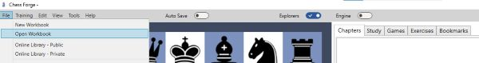
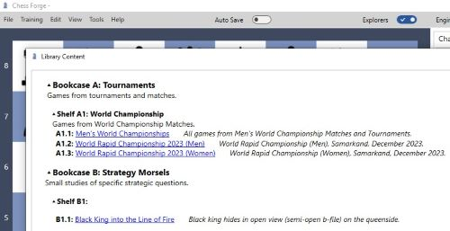
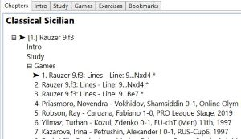
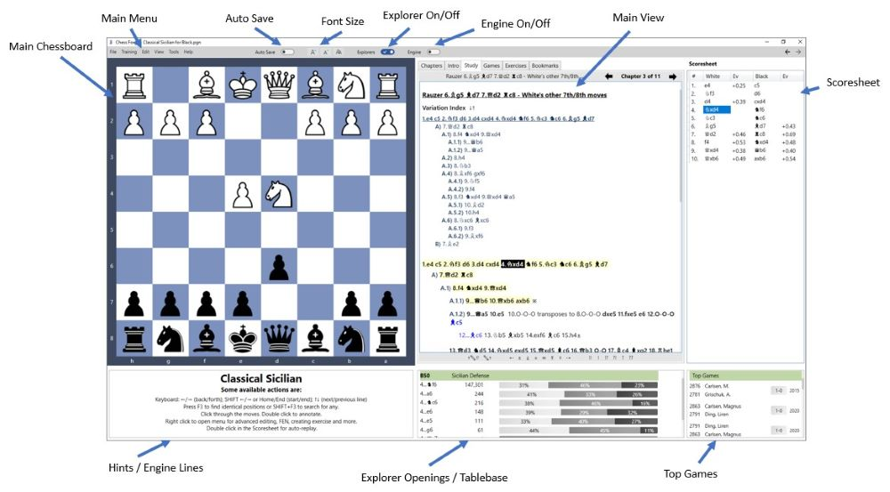
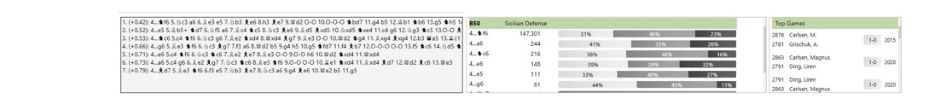
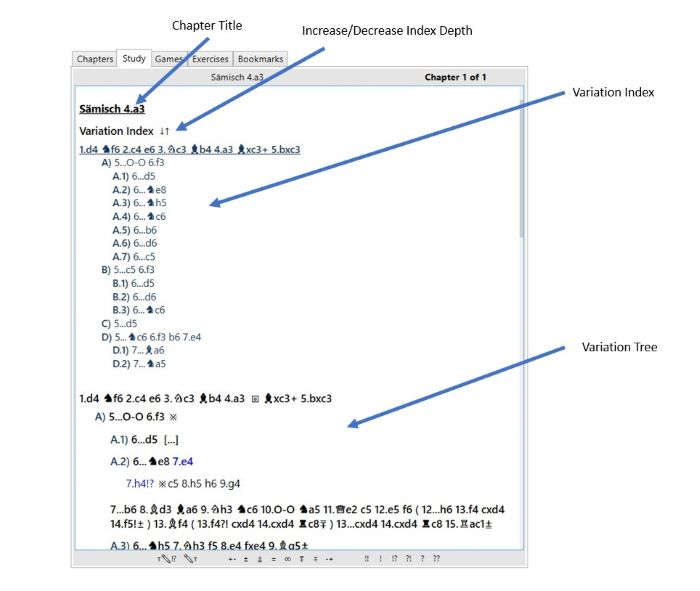
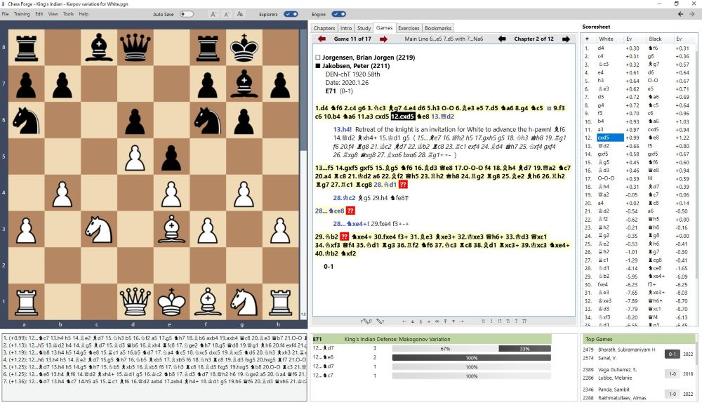
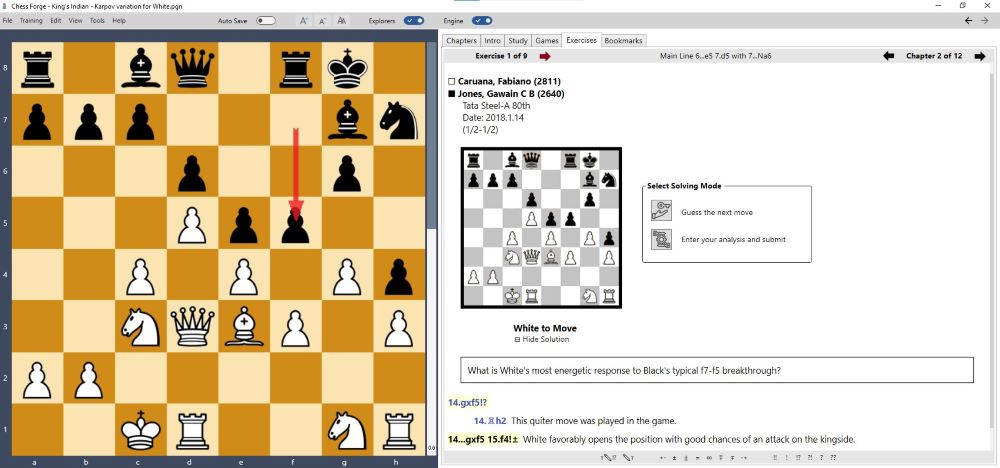

Getting Started
Chess Forge can be installed on a Windows PC or used as a portable application.
The simplest way to install the program is to navigate to the download page (click the link below), download the installer, and run it on your PC.
Download PageNote that currently the installer is not digitally signed, so the browser and/or the Windows system will likely issue a few warnings.
For detailed information and the instructions on using Chess Forge as a portable application, see the Installation Guide (click the link below).
Installation GuideRun the installed program.
Open a Workbook
You can open a workbook from either the local disk or from the ChessForge online library.
From a local file
Select File->Open from the main menu and choose a workbook.
There are a few samples distributed with the installation and you can find them in the
Documents/{user_name}/Chess Forge folder.
Open menu item" />
From the online library
Alternatively, if your PC is online, selectFile->Online Library - Public from the main
menu to open Chess Forge's Public Library.
Click on any book in the library to view it.

Main Window
When you open a given workbook for the first time, it will initially show the chapters view.

Click on Study or double click the chapter's title to open the Study view. The image
below identifies the various elements of the window.

If the engine is turned on, the box below the Main Chessboard will display the engine lines instead of user hints.

Self-Indexing Study View
The Study is shown as a uniquely designed, self-indexing view which includes a Variation Index displayed under the chapter's title.
The full variation tree is displayed under the Index and is organized into sections/paragraphs corresponding to the index table. This mimicks the experience of reading a chess book.

Note that as a result, there will typically be no single "main line" in the view. Each "section" has its own "main line".
The index adjusts itself as you edit variations.
The depth of the index can be instantly increased or decreased by clicking the arrows next to the Index's header. If you decrease the depth to 0, the Index will disappear altogether. You can bring it back by clicking the chapter's title.
The depth setting will be remembered for each study between sessions.
Coming in version 1.8: Each indexed variation can be collapsed or expanded for more convenient/focused viewing. The collapsed/expand state is not remembered between sessions. The view always re-opens with all lines expanded.
Games View
The Games view is designed for showing a single game at a time. Therefore, unlike the Study view, it does not have the Variation Index and has a single main line. That main line is, of course, the text of the game (i.e. the actual moves as opposed to any comments that may have been added to the game) and is shown in a bolded font.

Exercises View
In Chess Forge terminology, an exercise is a game fragment starting at any position. It can be a tactical problem, an endgame study, or any other kind of analysis. The Exercise view differs somewhat from the other views.

The Scoresheet on the right hand side is shown only when the solution is expanded. By default the solution is hidden when opened for the first time although this setting can be changed from the menu View -> Show Solutions. If hidden, you need to click the Show Solution heading to open it.
The starting position is shown on a small diagram below the headers and there are prominent buttons allowing the user to enter one of the two solving modes.
Training View
Please refer to the Training page.
Key Features
- Peruse, study, and evaluate with engines chess content from Chess Forge's workbooks and/or plain PGN files.
- Study and train against downloaded, coach-supplied, or self-created PGN Workbooks.
- Author own workbooks for different stages of the game or automatically create them from PGN files.
- Browse and edit variations in the special self-indexing Study View (see above).
- View, evaluate, and edit model games with the help of the engine and Opening Explorer.
- In any position, use the Opening Explorer to preview/import Top Games from lichess.org.
- View, edit, or solve exercises and endgames. Choose from two solving modes: guessing the main line or submitting an analysis
- Analyze endgames with tablebases.
- Download any user's games from lichess.org or chess.com into the currently open or a new workbook.
- Organize downloaded games of a player into repertoire, white/black, chapters and trees.
- Test your knowledge against the content of the Workbook. Start a game against the engine from any position.
- Restart / roll-back your training or your engine game at any point.
Note: some features (e.g the Opening Explorer, Online Library, lichess downloads) are only available if your PC is online.